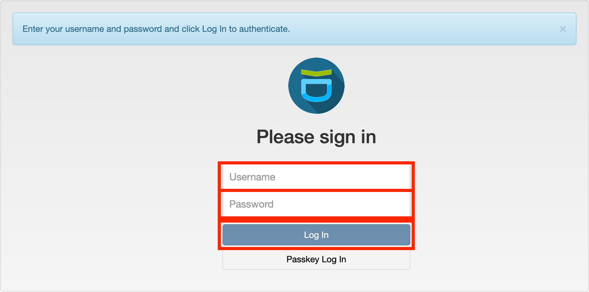
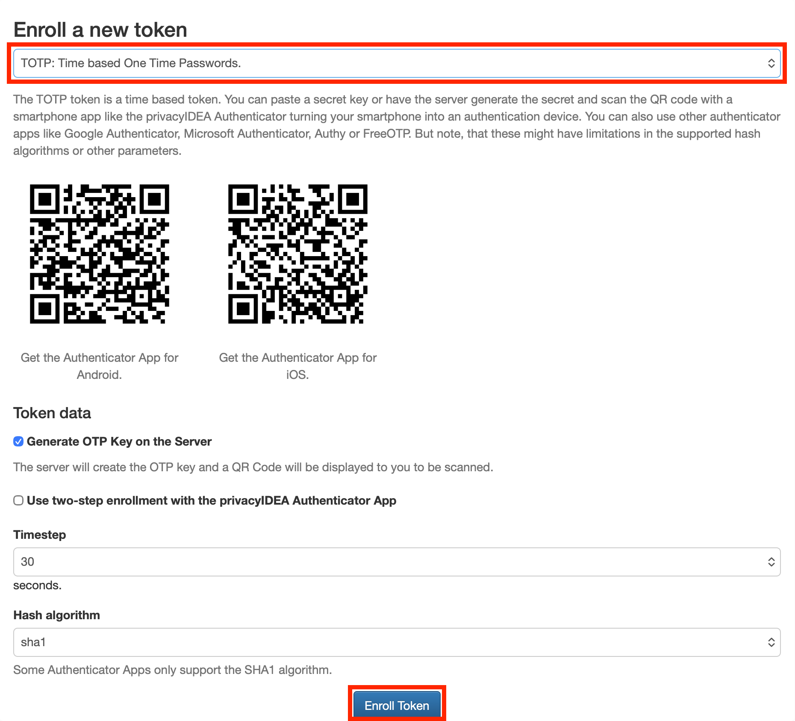

Get Started with the Cluster¶
This guide covers obtaining a Mila account, connecting to the cluster, and setting up the tools needed to run jobs. Follow the steps in order.
Before you begin¶
Obtain your Mila account (@mila.quebec)
- Ask your supervisor how to get invited into the Mila organization and
obtain your
@mila.quebecaccount. - After your supervisor submits the application, a confirmation email will arrive from IT support with instructions to access the account and connect to the cluster.
Still waiting for your account?
If this takes longer than expected, contact MyMila support.
Enable your cluster access
- Read the IT Onboarding Guide and complete and submit the quiz.
- After passing the quiz, IT will send the connection details by email or on Slack, including the cluster username. Cluster access can take up to 48 hours to become effective.
- IT will send an email to activate Multi-Factor Authentication.
Windows users: install WSL first
Windows users need WSL (Windows Subsystem for Linux) to run the commands in this guide (curl, ssh, uv, etc.).
Steps:
- Open PowerShell.
- Run:
- Restart the computer when prompted.
- After restart, WSL will finish setup. A prompt may appear to create a Linux username and password.
- Open Ubuntu from the Start menu to get a Linux terminal.
Verify: In the WSL terminal, run ls and curl --version to confirm
the shell is functional.
curl 8.4.0 (x86_64-pc-linux-gnu) libcurl/8.4.0 OpenSSL/3.0.9 zlib/1.2.13 brotli/1.0.9 zstd/1.5.5 c-ares/1.19.1 nghttp2/1.51.0
Release-Date: 2023-10-11
Protocols: dict file ftp ftps http https imap imaps mqtt pop3 pop3s rtsp smtp smtps tftp
Features: alt-svc AsynchDNS brotli HSTS HTTP2 HTTPS-proxy IPv6 Largefile libz NTLM SSL threadsafe TLS-SRP UnixSockets zstd
Note
Run all commands in this guide (uv, milatools, ssh) inside the
WSL terminal, not in Windows PowerShell or Command Prompt.
What this guide covers¶
- Set up Multi-Factor Authentication (MFA).
- Install
uvandmilatoolslocally. - Configure SSH access with
mila init. - Verify the SSH connection to the cluster.
- Install
uvon the cluster.
Set up Multi-Factor Authentication (MFA)¶
Cluster access requires two factors: an SSH key (first factor) and a second factor (TOTP, push notification, or email token). The MFA setup must be completed before connecting via SSH.
Get your registration token¶
Look for an email with the subject Votre accès temporaire registrationcode / Your temporary access registrationcode; it contains a one-time registration token that expires after use.
First-time MFA setup¶
Set up TOTP before leaving
After the first visit, the MFA web portal will only accepts a TOTP code. Leaving without setting up TOTP locks out the account, and a new registration token will be needed from IT support.
-
Go to https://mfa.mila.quebec.

-
Username: your cluster username (not your
@mila.quebecemail address). -
Password: enter the registration token from the email (not your account password).
-
After logging in, immediately add at least one TOTP token to your account:

Install uv on a local machine¶
uv is a fast Python package manager and workflow tool, that serves as a
drop-in replacement for pip and virtualenv, for quickly installing project
dependencies, managing packages, and creating isolated Python environments.
On a personal computer, run:
References
Connect to the cluster¶
Cluster access
Before proceeding, complete:
Install milatools¶
milatools is a command-line tool that simplifies connecting to the Mila
cluster. It configures SSH automatically and provides mila code to open VSCode
directly on a compute node.
Install a personal computer (after installing uv):
See the milatools README for more details.
Configure milatools¶
Run mila init with your cluster username ready. This sets up the SSH config,
public keys, and passwordless auth.
Checking ssh config
Created the ssh directory at /Users/username/.ssh
Created /Users/username/.ssh/config
Do you have an account on the Mila cluster? [y/n] (y): y
What's your username on the Mila cluster?
: MILA_USERNAME
The following modifications will be made to /Users/username/.ssh/config:
[...]
───────────────────────────────────────────────────────────────────────────────────────────────────────────────────
MILA SETUP
───────────────────────────────────────────────────────────────────────────────────────────────────────────────────
Checking connection to the mila login nodes...
✅ Able to `ssh mila`
❌ Local /Users/username/.ssh/id_ed25519_mila.pub is not in ~/.ssh/authorized_keys on the mila cluster, or file
permissions are incorrect. Attempting to fix this now.
Checking connection to compute nodes on the mila cluster. This is required for `mila code` to work properly.
[18:16:21] (mila) $ mkdir -p ~/.ssh remote_v2.py:115
[18:16:22] (mila) $ echo 'ssh-ed25519 remote_v2.py:115
XXXXXXXXXXXXXXXXXXXXXXXXXXXXXXXXXXXXXXXXXXXXXXXXXXXXXXXXXXXXXXXXXXXX From home to Mila'
>> ~/.ssh/authorized_keys
(mila) $ chmod 600 ~/.ssh/authorized_keys remote_v2.py:115
[18:16:23] (mila) $ chmod 700 ~/.ssh remote_v2.py:115
(mila) $ chmod go-w ~ remote_v2.py:115
✅ Your public key is now present in ~/.ssh/authorized_keys on the mila cluster, and file permissions are correct.
✅ Local /Users/username/.ssh/id_ed25519_mila.pub is in ~/.ssh/authorized_keys on the mila cluster and file
permissions are correct. You should now be able to connect to compute nodes with SSH.
Verify your connection¶
Open a terminal and run ssh mila. When prompted for an OTP, enter the 6-digit
TOTP code from the authenticator app — the code will not appear
on screen as it is typed:
(username@login.server.mila.quebec) please enter otp:
================================================================================
.:.
.*#*: :#%%%+...-*
:#%#: -%%%%* :. -
.=+*=: .:..--- -. - .. .. .. ..
:%%%%%%= *%%%*...==......-= =%%+ :%%% *%%= .%%=
:%%%%%%+ #%%%# ::. -:: =%%%= .#%%% .-- .%%=
:+##*- :-: : :: .- .: =%%%%: #%%%% :: .%%= .:---:
:=- =**= .*%%#= .: : : =%%+%#. *%**%% -%%: .%%= :#%#++*%%+
%%%-:%%%%:=%%%%%....-*......:* =%%.+%# =%# +%% -%%: .%%= .-: .%%-
:-. :==: -+*+: -. - :: =%%. *%* -%#. +%% -%%: .%%= .=*#####%%=
+%%%%*. .=+=. - - -. -. =%%. .#%+.%%- +%% -%%: .%%= .#%+. .%%=
-%%%%%%* %%%%%...==......-+ =%%. :%%#%= +%% -%%: .%%= .%%+. :*%%=
*%%%%#: =#%#= .::. :. -**. -**+ =** :**. **- :+#%%#*-**=
.:-: -+= =**+. :: .-
+%%%+ =%%%%# .:.:
-=- .+##*:...-+
* Documentation: https://docs.mila.quebec
* Monitoring: https://dashboard.server.mila.quebec
* Support: http://it-support.mila.quebec/
or email it-support@mila.quebec
================================================================================
====================== Cluster Login-node: Login-2 =======================
================================================================================
System information as of Mon Mar 16 06:30:05 PM EDT 2026
System load: 0.39 Processes: 1415
Usage of /: 40.5% of 38.09GB Users logged in: 78
Memory usage: 70% IPv4 address for ens18: 172.16.2.152
Swap usage: 0%
==================== NEWS ======================================================
================================================================================
Last login: Fri Feb 27 09:29:48 2026 from 74.58.126.98
After entering the OTP, the session opens on a login node — a shared entry point to the cluster. Login nodes are for submitting jobs and managing files, not for running computations directly.
Not prompted to enter an OTP?
Review the steps to install and configure milatools.
The Login node banner does not appear after entering the OTP?
Review the steps to set up Multi-Factor Authentication.
Install uv on the cluster¶
Once connected via SSH to the Mila cluster, run the
same uv install command as before but on a login node:
Key concepts¶
uv- Fast Python package manager and virtual environment tool. Used on both a local machine and the cluster.
milatools- CLI tool (
mila) for setting up SSH config and opening VSCode on compute nodes. - MFA
- Multi-Factor Authentication. Required for every SSH login to the cluster.
Next steps¶
With cluster access established, proceed to the following guides to run a first job and train a first model:
-
Run your first job on the cluster with PyTorch using
mila codeand VSCode on a GPU compute node. -
Train your first ResNet18 model on CIFAR-10 on a single GPU using
sbatch.